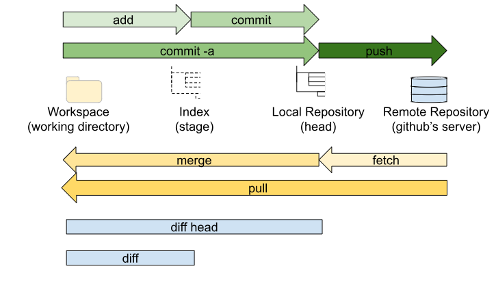
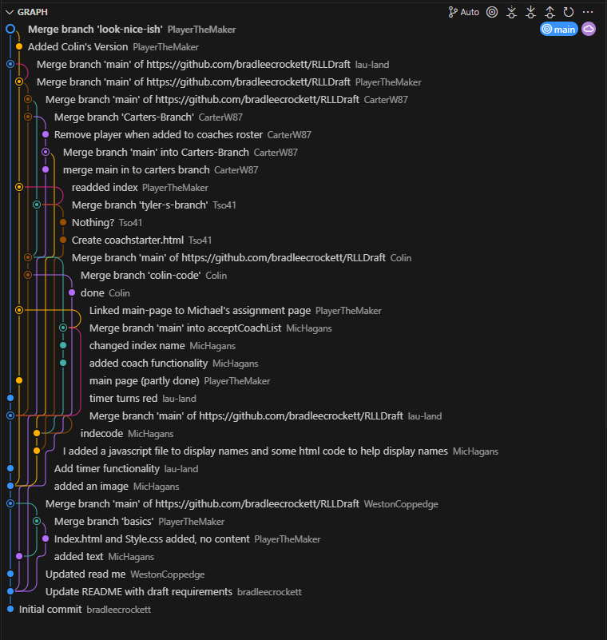
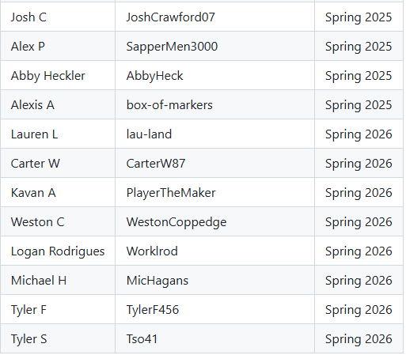

This was the second week of class, so we're still in the introductory/preparatory phase. Last week I set up this website, but this is my first blog here.

In class we learned about git and github, working on a couple of demo projects as a class to get acquainted with the system.

This is a screenshot of our commit history of a project to help Roseville Little League Coaches pick their teams. It probably will not be used.

This is the "Wall of Fame" for our Tech Inno class. It's a github repository that kids add their names to each year. You can find my name there now!
I'm not sure if I've written enough, but that's really all we did this week.